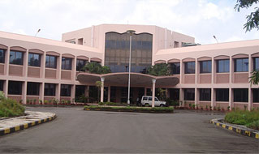

Chandra Kumar
Software Engineer @Simplify360 Indiranagar Bengaluru, Karnatka, Pin 560038
Engineer, Programmer, Hacker
About
"I am a Geek
- Bill Gates
Chandra Kumar was born in India. He obtained a Bachelor of Technology (B. Tech) degree in Computer Science & engineering in 2011 from Dronacharya College of Engineering Greater Noida ( Dr. A.P.J. Abdul Kalam Technical University, formerly Uttar Pradesh Technical University ), Uttar Pradesh, India.
Following his graduation in 2011, He obtained a P.G Diploma degree in Full Post Graduate Diploma in Advanced Software Technology ( FPGDST ) from Center for Development of advanced computing ( CDAC ) Kharghar Navi Mumbai formerly known as Nationnal Centerfor SoftwareTechnology.During one year course implemented various project in difirent module of course i.e TCP/IP simulation, DOS Command Simulation, e-Commerce Platformfor online book shop
He Joined Asfera & Aster solution Pvt Ltd in Aug 2012 as a Software Engineer and he worked more than 2 years in Asfera & Aste solutions Pvt. Ltd and during 2 years of period wrorked on large business base appllication related to Shipping, Logistics and Warehouse Management.
He Joined Mahaonline Ltd as Software Engineer and lead the Aadhaar team, There he and his team implemented aadhaar authentication and e-KYC API.
He Joined Simplify360 as Sr. Software Engineer on April 6, 2017, Currently he worked here and involed in System Design, Solution design and implementation etc.
To learn more, download his vita or explore this website.
"Education is an admirable thing, but it is well to remember from time to time that nothing that is worth knowing can be taught."
- Oscar Wilde
Education
Full Post Graduate Diploma in Advanced Software Technology ( FPGDST ) (2011-2012)
 Center for Development of Advanced Computing, Kharghar Navi Mumabi, India
C-DAC, Mumbai (formerly National Centre for Software Technology) was established in the year 1985 as a National Laboratory, for R&D in Software Technology. Currently, the centre is having its offices in Juhu (Mumbai), Kharghar (Navi Mumbai) and Nariman Point (Mumbai) From the decades, the centre is carrying out R&D in Software-intensive System and Technologies for various sectors. This has help C-DAC to Enhance India's role as a leader in Software Engineering and Allied Disciplines. C-DAC plays a major role in the National e-Governance Plan (NeGP) of the Govt. of India which aims to make all Government services accessible to the common man in his locality, through common service delivery on state and national level.
One year P.G Diploma course teaches programing in C, Java, Competetive programing, Operating System, Network, Web and compulsury project in every modules.
Prjects : DOS command simulation in C,TCP/IP simulation in java, Online Book Store in Java/J2EE
Advisors : Mr. Shekhar Shrma ( Chief Scienctint ), Mr. Akshaya Kumar ( Chief Scienctint ) , Mr Manoj ( Project Engineer )
Team Members : Sudhanshu Mishra, Gaurav Bhansali, Bupendra Singh Shekhawat
 Dronacharya College of Engineering Greater Noida, India
Dronacharya College of Engineering Greater Noida, India
Dronacharya Group of Institution (also known as DGI, Greater Noida) situated in Greater Noida, NCR, India. The institute is approved by All India Council for Technical Education (AICTE),[1] Ministry of Human Resource Development, Government of India and affiliated to Dr. A.P.J. Abdul Kalam Technical University which is one of the biggest Universities in the state of Uttar Pradesh. Institute's campus, spread over 10 Acres is situated at Knowledge Park, Greater Noida, Uttar Pradesh. The Institute has Environment friendly infrastructure with lush green surroundings. The Institute has more than 60 Laboratories and an air conditioned Central library having more than 3800 books and National & International journals.
Advisor: Prof. Rajiv Kumar Mishra
"The woods are lovely, dark and deep,
But I have promises to keep,
And miles to go before I sleep,
And miles to go before I sleep."
- Robert Frost
Refereed Journals

Under Review
Consensus tracking in multi agent system with nonlinear and non identical dynamics via event driven sliding modes, submitted to IEEE Transactions on Automatic Control.Authors: Chandra Kumar

Under Review
Consensus in first order nonlinear heterogeneous multi agent system with event based sliding mode control, submitted to International Journal of Control.Authors: Chandra Kumar

Under Review
Consensus in second order heterogeneous multi agent systems using event triggered sliding mode control, submitted to Multidimensional Systems and Signal Processing.Authors: Chandra Kumar

Under Review
Event triggered sliding mode based consensus tracking in second order heterogeneous nonlinear multi agent systems, submitted to European Journal of Control.Authors: Chandra Kumar
Under Review
Control of a nonlinear continuous stirred tank reactor via event triggered sliding modes, submitted to Chemical Engineering Science.Authors: Chandra Kumar
Under Review
Event driven sliding mode for congestion control in cognitive radio networks, submitted toIEEE Communication Letters.Authors: Chandra Kumar
Under review
Congestion control in Cognitive Radio Networks with event triggered sliding mode, under review, Wireless Networks.Authors: Chandra Kumar

January 2015
Nonlinear autonomous altitude control of miniature helicopter UAV based on sliding mode methodology, International Journal of Electronics and Communication Technology, vol. 61, spl.- 1, Jan- Mar 2015, proceedings of International Conference on Foundatons and Frontiers in Computer, Communication and Electrical Engineering (C2E2 ‘15), Mankundu, India, 9th-10th January, 2015.Authors: Chandra Kumar
Peer Reviewed Conference Proceedings
Under Review
Cooperative control of multi agent systems to locate source of an odor, submitted to 2018 IEEE International Conference on Electronics, Communication and Computing Technologies.Authors: Chandra Kumar

Under Review
Temperature regulation in a Continuous Stirred Tank Reactor using event triggered sliding mode control, submitted to Advances in Control and Optimization of Dynamical Systems- 5th ACODS 2018.Authors: Chandra Kumar
Under Review
Distributed cooperative control of multi agent systems for odor source localization, submitted to Advances in Control and Optimization of Dynamical Systems- 5th ACODS 2018.Authors: Chandra Kumar
October 2015
Robust nonlinear congestion controller for time delayed and uncertain cognitive radio based wireless network, 2015 IEEE Power, Communication and Information Technology Conference (PCITC), Bhubaneswar, India, 15th-17th October, 2015.Authors: Chandra Kumar
March 2015
Sliding mode controller design for high performance of permanent magnet stepper motor, 2015 IEEE International Conference on Innovations in Information, Embedded and Communication Systems (ICIIECS), Coimbatore, India, 19th-20th March, 2015.Authors: Chandra Kumar
March 2015
Robust altitude tracking of a miniature helicopter UAV based on sliding mode, 2015 IEEE International Conference on Innovations in Information, Embedded and Communication Systems (ICIIECS), Coimbatore, India, 19th-20th March, 2015.Authors: Chandra Kumar
March 2015
Robust nonlinear congestion controller for cognitive radio based wireless network, 2015 IEEE International Conference on Innovations in Information, Embedded and Communication Systems (ICIIECS), Coimbatore, India, 19th-20th March, 2015.Authors: Chandra Kumar
Feburary 2015
Robust and Smooth Nonlinear Control of an Industrial Robot for Automated Pick and Place, 2015 IEEE International Conference on Computing Communication Control and Automation (ICCUBEA), Pune, India, 26th-27th February, 2015. Authors: Chandra Kumar
January 2015
Nonlinear Autonomous Control of a Two-Wheeled Inverted Pendulum Mobile Robot Based on Sliding Mode, 2015 IEEE International Conference on Computational Intelligence and Networks (CINE), Bhubaneswar, India, 12th-13th January, 2015.Authors: Chandra Kumar
December 2014
Perturbing effect compensation technique for smart sensors, 7th IEEE International Conference on Information and Automation for Sustainability (ICIAfS), Colombo, Sri Lanka, 22nd-24th December, 2014.Authors: Chandra Kumar
December 2014
Smooth sliding mode controller design for robotic arm, 2013 International Conference on Control, Automation, Robotics and Embedded Systems (CARE), Jabalpur, India, 16th-18th December, 2013.Authors: Chandra Kumar
Book Chapters

January 2016
Smooth sliding mode control of a nonlinear CSTR using an inverse hyperbolic function-based law, Foundations and Frontiers in Computer, Communication and Electrical Engineering: Proceedings of 3rd International Conference C2E2, Mankundu, West Bengal, India, 15th-16th January, 2016.Authors: Chandra Kumar
January 2016
Congestion control in Cognitive Radio Networks using fractional order rate reaching law based sliding modes, Foundations and Frontiers in Computer, Communication and Electrical Engineering: Proceedings of 3rd International Conference C2E2, Mankundu, West Bengal, India, 15th-16th January, 2016.Authors: Chandra Kumar
"People never learn anything by being told, they have to find out for themselves."
- Paulo Coelho
Experience

Jun'17 - Present Post Graduate Researcher
The M. Tech programme of Mechatronics and Robotics, in which I am enrolled, is jointly offered by School of Mechatronics and Robotics, Indian Institute of Engineering Science and Technology, Shibpur, India and three CSIR labs- Central Scientific Instruments Organization, Chandigarh UT, India; Central Electronics Enginnering Research Institute, Pilani, India; and Central Mechanical Engineering Research Institute, Durgapur, India. My coursework was completed in IIEST-S during 2016-17 post which I am working towards coordinated control of multiple mobile robots for odor source localization at CSIR- CSIO. This project is a part of olfaction research at CSIR- CSIO.Website: CSIR, CSIO

Sep'14 - Jul'16 Consultant, Automation & Control Systems
Worked on tools like WinCC SCADA, Kepware, Step7, Prosoft, etc. for Control System Integration (CSI); GE IP Proficy Suite, SAP ME, etc. for Manufacturing Execution Systems (MES); and SAP MII for Enterprise Manufacturing Intelligence (EMI). Integrated data from factory floor machines with business layers for various productivity applications like reporting, dashboarding, monitoring, etc. Configured multi master and sensor data integration directly to cloud. Provided plant network security and segmentation for several new manufacturing units. Worked towards enhancing efficiency in Manufacturing Operations Management (MOM).Website: TCS
Nov'15 Visiting Faculty, EIS talent Development
Visited TCS Global Learning Centre at Trivandrum, India to impart hands on training on Manufacturing Operations Management (MOM) and the role of web technologies such as HTML, CSS, JavaScript, etc. in it. The training subjects were of diverse background with a majority having a major in mechanical engineering. Introduced concepts of flow of data from factory floor to managerial layer and cloud; machine logic and business logic; and other aspects of role of engineering and IT in manufacturing.Website: TCS

May - Jun'13 Engineering Intern
Learnt how TATA Steel manages everything from science and technology to management, planning to execution and conception of idea to product development. My focus was on the applied study of functioning of one of the largest synchronous motors in Asia commisioned at TATA Steel which uses Siemens Sinamics drive system to operate, and triggers the blower which is connected to blast furnaces.Website: TATA Steel

May - Jun'12 Vacation Trainee and Intern
Learnt the functioning of telecom system and was able to do a thorough study of the functioning and behaviour of telecom system and exchanges and other networks. Theoretical courses covered transmission of signals and telecom operations, WiMax technologies, multimedia, internet and voice services, broadband, etc. The training also involved a field study of Base Transceiver Stations in the circle.Website: BSNL
“Far and away the best prize that life offers is the chance to work hard at work worth doing."
- Theodore Roosevelt
Awards & Honors
MHRD Postgraduate GATE fellowship · Ministry of Human Resource Development, India
Awarded for qualifying Graduate Aptitude Test in Engineering (GATE) with 96 percentile, a computer based standardized test conducted by jointly by Indian Institute of Science and Indian Institutes of Technology on behalf of the National Co-ordination Board – GATE, Department of Higher Education, Ministry of Human Resource Development, Government of India for postgraduation education in engineering and graduate employments in various Public Sector Undertakings under Government of India.Champions of Initial Learning Program (ILP) · TATA Consultancy Services Limited
Award for contribution towards Engineering and Industrial Services (EIS)- Talent Development in Manufacturing Operations Management domain. Associated with the position of visiting faculty at TCS.On the spot award · TATA Consultancy Services Limited
Award for the research work done in the field of Control Systems and allied areas, and for serving as research reviewer for many technical peer reviewd conferences in India and abroadBest paper award · IEEE Computer Society & IEEE Pune section
Awarded Best Paper of the session track in Robotics at IEEE International Conference on Computing, Communication, Control and Automation, Pune, IndiaOutstanding contribution award · KIIT Robotics Society, KIIT University
Awarded for technical contribution towards the society.Top achiever award · National Institute of Technology Jamshedpur, India
Awarded for achieving top score in the autonomous robotics event in Ojass 2012, an annual techno- management fest of NIT Jamshedpur, India.